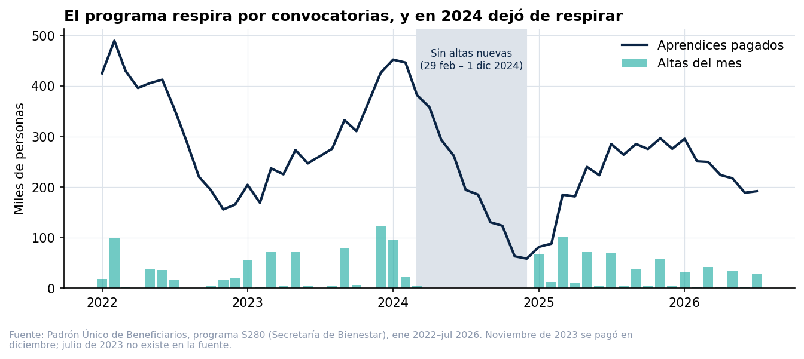
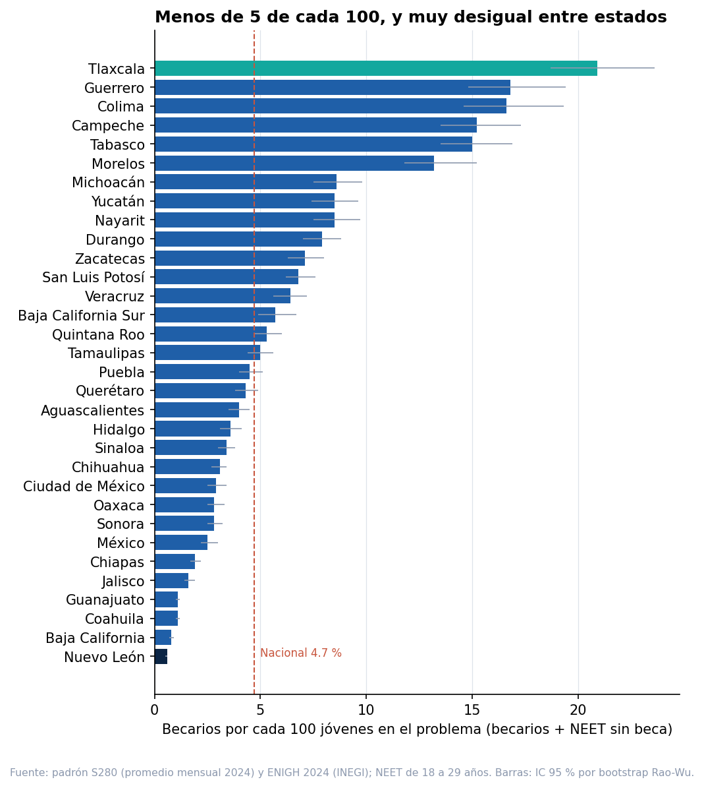
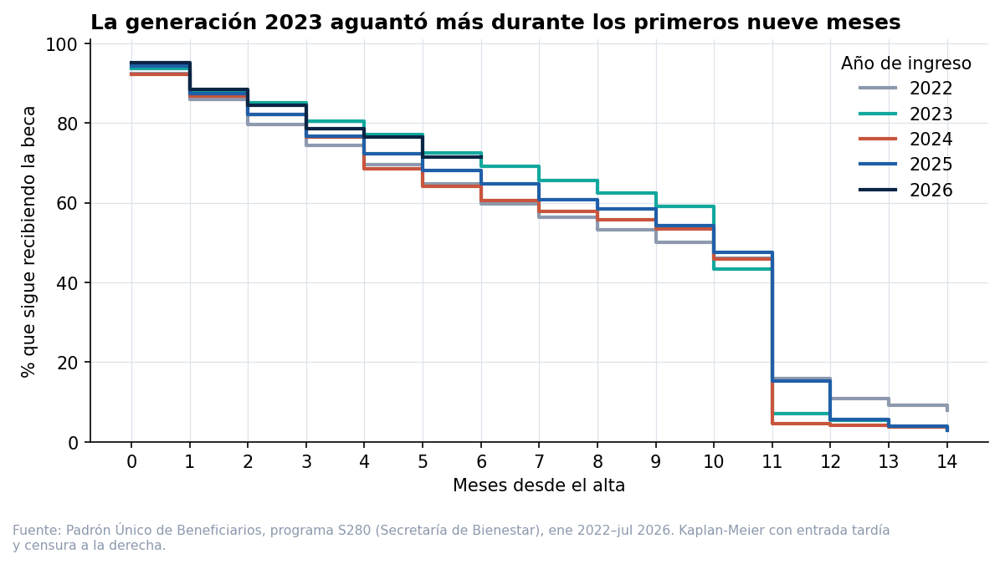
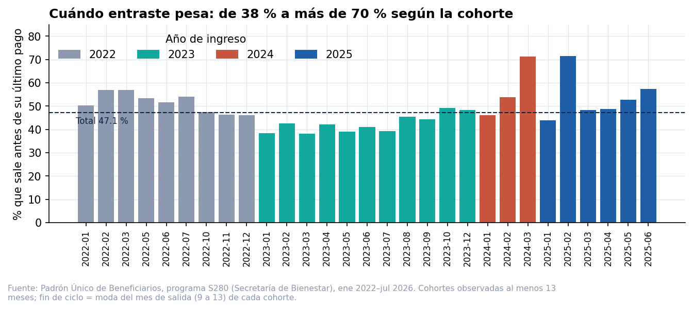
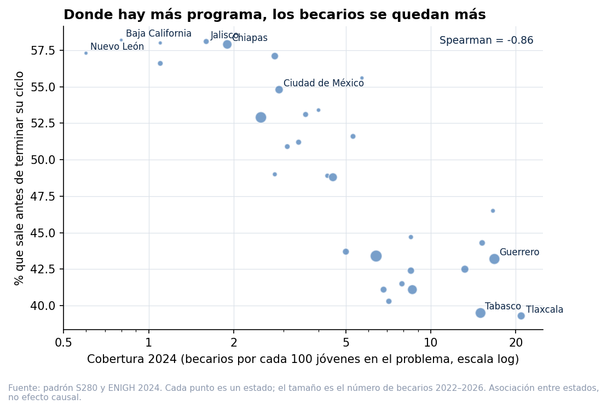
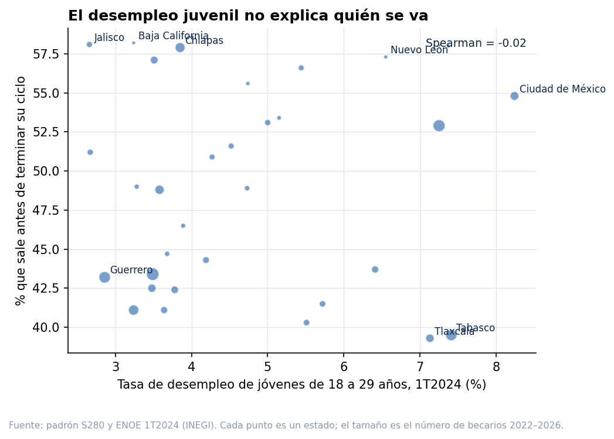
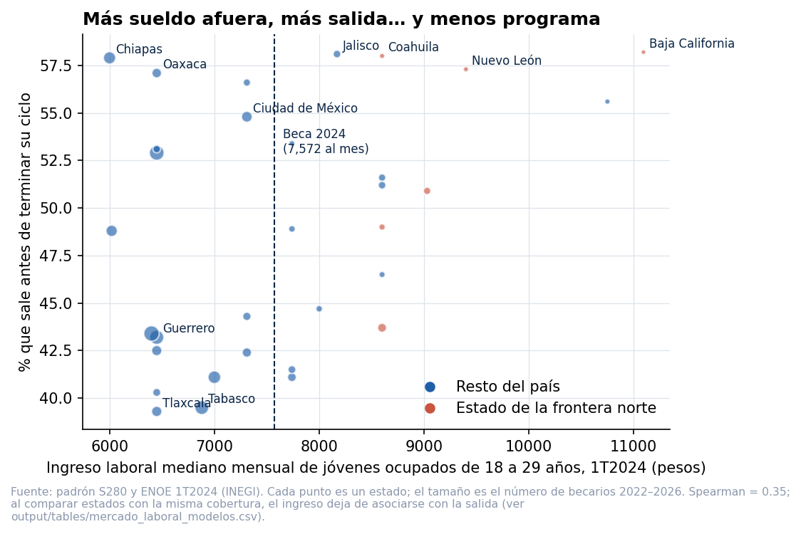
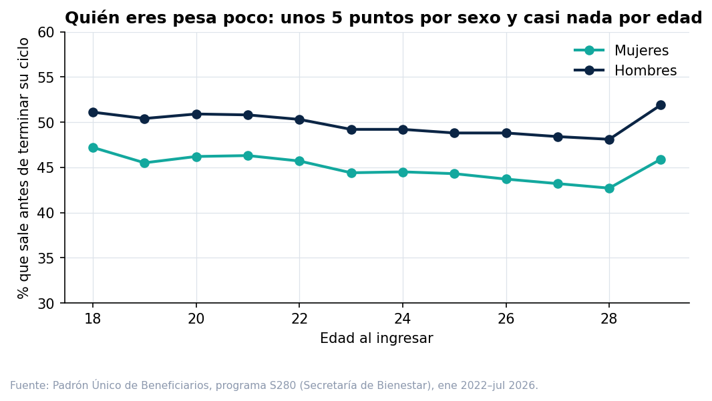

Contexto 1 · El padrón, 2022–2026
Cobertura y permanencia de las y los aprendices, mes a mes
El Padrón Único de Beneficiarios publica cada mes a todas las personas que cobran la beca de Jóvenes Construyendo el Futuro (programa S280). No trae un identificador de persona, así que primero hay que reconstruir la trayectoria de cada aprendiz. Con ese panel, que cubre de enero de 2022 a julio de 2026 (13.9 millones de registros, 1.9 millones de personas), se pueden responder tres preguntas que la ENIGH no alcanza a ver:
¿Qué parte del problema atiende?
Cuántos becarios hay por cada 100 jóvenes que no estudian ni trabajan, por estado.
¿Cuántos completan su ciclo?
Qué proporción sale antes de su último pago y cómo cambia entre cohortes de ingreso.
¿Quién sale antes?
Si pesa más el perfil (sexo, edad) o el contexto (cohorte, estado, mercado laboral).
El análisis es descriptivo: no estima efectos causales del programa.
1. El padrón sube y baja con las convocatorias
Entre el 29 de febrero y el 1 de diciembre de 2024 no hubo altas nuevas y el padrón cayó de 452 mil a 58 mil aprendices pagados. Es justo el año que mide la ENIGH 2024, y explica por qué la comparación del informe se limita a mayo, junio y julio.

2. Atiende a menos de 5 de cada 100 jóvenes en el problema
La cobertura fue de 4.7 % en 2024, con grandes diferencias entre estados: de 20.9 % en Tlaxcala a 0.6 % en Nuevo León.

3. Casi la mitad sale antes de su último pago
El 47.1 % sale antes de terminar su ciclo, y cerca de la mitad de esas salidas ocurre pronto: al tercer mes ya se fue uno de cada cuatro. La generación 2023 aguantó más durante los primeros nueve meses.

4. Cuándo entraste pesa
La salida antes de terminar el ciclo va de 38 % (cohorte de marzo de 2023) a más de 70 % (las cohortes de marzo de 2024 y febrero de 2025).

5. Dónde vives también pesa
Los estados con más cobertura retienen más (Spearman = −0.86 entre 32 estados).

6. Pero no es el desempleo
La tasa de desempleo juvenil no se asocia con la salida (Spearman = −0.02). Tlaxcala y Nuevo León tienen un desempleo parecido (7.1 % y 6.6 %) y salidas opuestas (39 % y 57 %).

7. Y el sueldo de afuera tampoco alcanza a explicarlo
Donde los jóvenes ocupados ganan más, la salida es algo mayor (Spearman = 0.35), y ahí está la frontera norte. Pero esos estados también tienen poca cobertura: al comparar estados con la misma cobertura, el ingreso deja de asociarse con la salida (0.31 puntos por cada mil pesos, error estándar 0.54), y los estados fronterizos salen incluso 3.7 puntos menos de lo que su cobertura predice. En 16 estados la beca de 2024 (7,572 pesos) iguala o supera el ingreso mediano de un joven ocupado; en Tlaxcala equivale a 117 % de ese ingreso y en Nuevo León a 81 %.

8. Quién eres pesa poco
Unos 5 puntos de diferencia por sexo y casi nada por edad.

Salir no es lo mismo que abandonar. Las Reglas de Operación 2024 cuentan la contratación por el centro de trabajo como causa de baja. Sin las causas de baja, que el padrón público no publica, la salida anticipada no se puede leer como éxito ni como fracaso.
Cómo se construyó
- Identificador de persona. El padrón no trae id. La llave es primer apellido, segundo apellido, nombre, sexo, fecha de alta y municipio; a los homónimos se les distingue por edad. Validación: un registro por persona y mes, edad coherente en 99.9997 % de los casos y 99.999 % de los ids de 2024 reaparecen en el panel histórico.
- Huecos en la fuente. Julio de 2023 no existe en el padrón publicado; el pago de noviembre de 2023 aparece en diciembre. Las pausas de hasta tres meses no cuentan como salida, porque las Reglas permiten cambiar de centro una vez con 90 días de plazo.
- Fin de ciclo propio. Las Reglas permiten hasta 12 pagos, pero las cohortes de reemplazo reciben 11. En lugar de un corte fijo, el fin de ciclo de cada cohorte es la moda del mes de salida entre 9 y 13 meses.
- Permanencia. Kaplan-Meier con entrada tardía (quien ya estaba en enero de 2022) y censura a la derecha (quien sigue activo en julio de 2026).
- Cobertura. Becarios ÷ (becarios + NEET sin beca) × 100. Los becarios se suman al denominador porque en la ENIGH declaran trabajar.
- Privacidad. El padrón es público pero contiene nombres; aquí solo se publican tablas y gráficas agregadas, sin nombres ni ids.
Fuentes. Padrón Único de Beneficiarios, programa S280 (Secretaría de Bienestar), enero 2022–julio 2026; INEGI, ENIGH 2024 y ENOE primer trimestre de 2024; STPS, Reglas de Operación del Programa Jóvenes Construyendo el Futuro 2024.